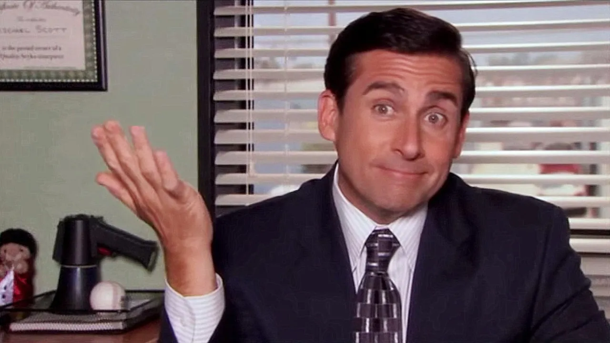

About Michael
Michael Scott is the Regional Manager of Dunder Mifflin Scranton and the Founder of Michael Scott Paper Company. People say he is the BEST BOSS!

Michael Scott is his office
Michael's Characteristics
- Despite his effective sales skills, Michael is lacking in almost all other skills. Jim once created a graph that shows Michaels spends 80% of his time "distracting others", 19% "procrastination", and 1% "critical thinking."
- Although his position as regional manager gives him authority on making decisions, he prefers to prioritize strengthening his relationship with his employees.
- Michael enjoys writing song parodies and has multiple miscellaneous characters, including:Prison Mike, Ping and Blind Guy McSqueezy
- Despite liking the majority of the staff, Michael fiercely and passionately hates Human Resources Manager Toby Flenderson.
Michael's Friends
Michael tends to overestimate his importance to his employees, and, despite constantly offending some of them, has a close bond with them and considering some of them as his closest friends. Click on the links below to learn more about Michael's friends.